Continuous atmosphere review
Simulator review only; the physical phone retains placement build33073e9. Normal rendering, saves, economy and R2-07 are unchanged. The same disposable grouped fixture is shown in day/dusk/night/dawn and static rain/fog.
The visual-only cycle defaults to120seconds, with an explicit24second preview. Static/power modes stop the clock, people, weather and existing fire/smoke. Eight or fewer warm ground-light pools are proposals, not accepted window/contact art. No hardware FPS, battery or human acceptance is claimed.
Onboarding placement review · Earlier visual review · Verification ledger
Recorded full visual cycle
Untrimmed simulator QA entry and an actual accelerated24second visual cycle; this does not measure startup or hardware performance. Recording provenance
Phone
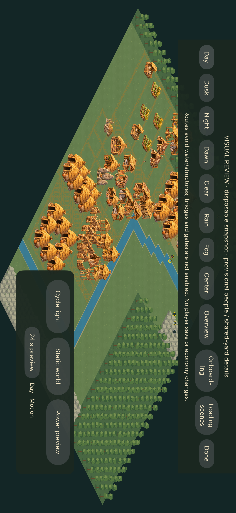
atmosphere day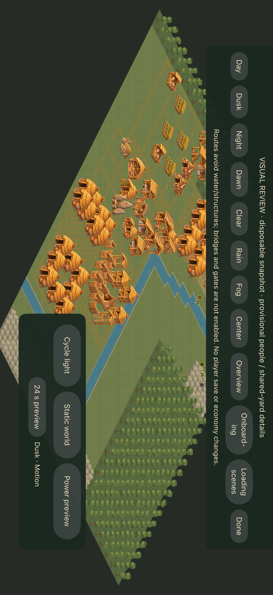
atmosphere dusk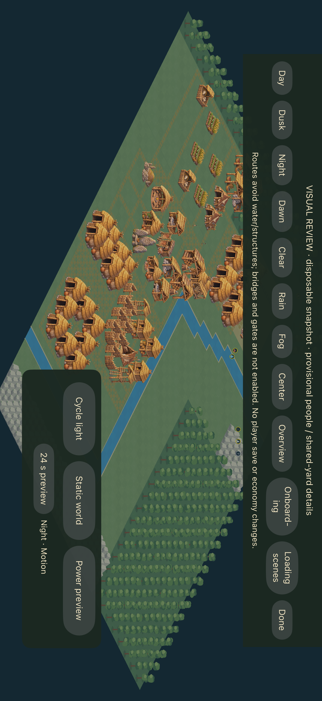
atmosphere night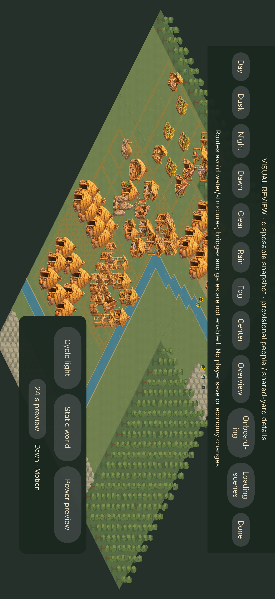
atmosphere dawnatmosphere rain staticatmosphere fog staticMini
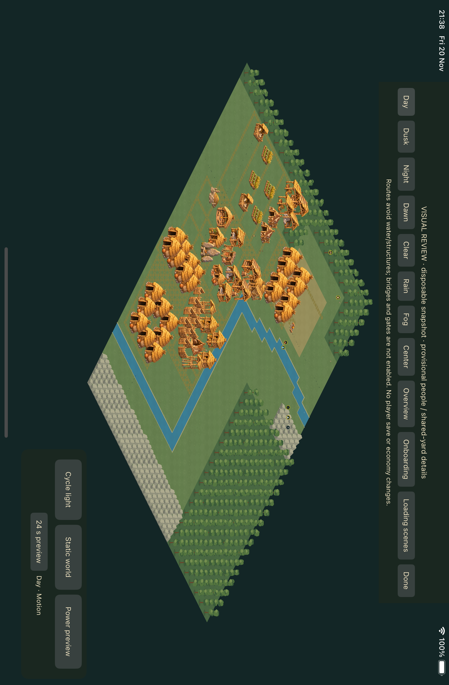
atmosphere day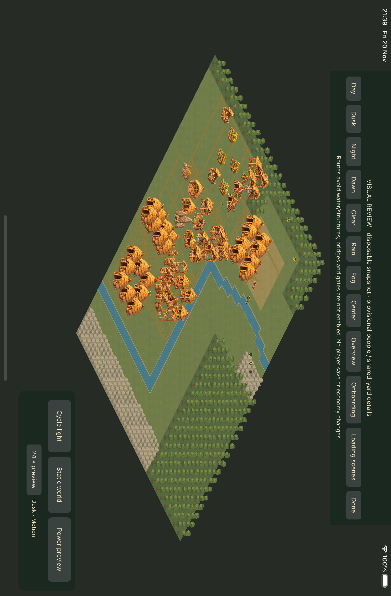
atmosphere duskatmosphere nightatmosphere dawn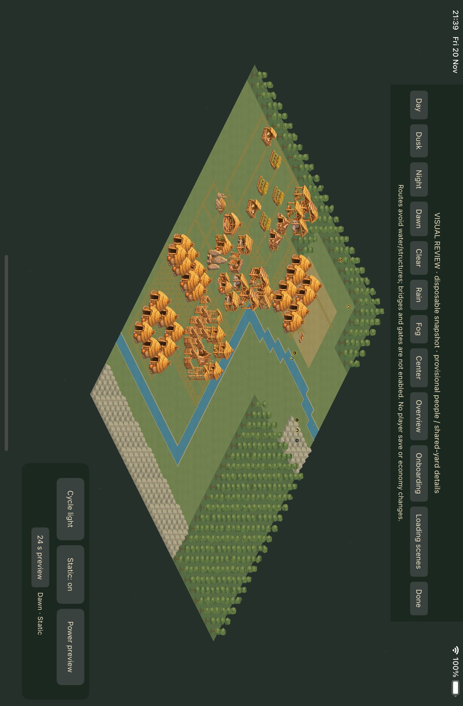
atmosphere rain staticatmosphere fog staticPro
atmosphere day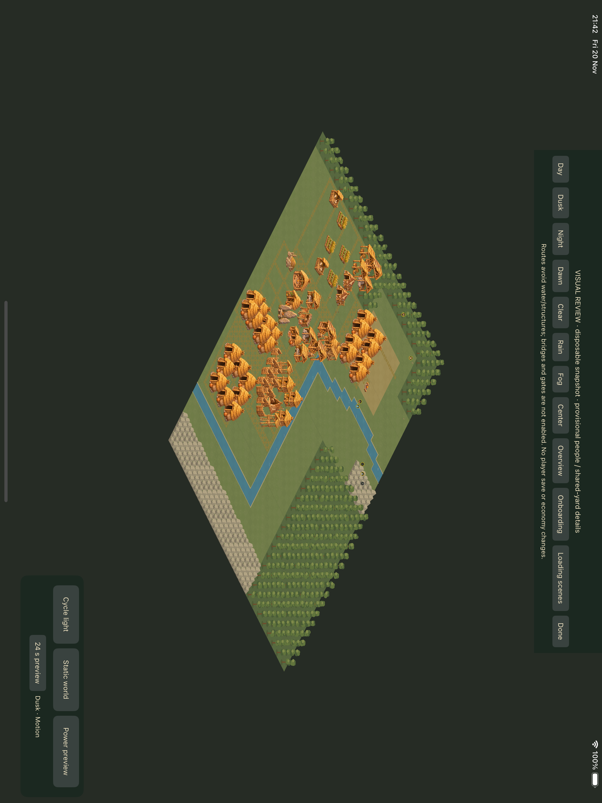
atmosphere dusk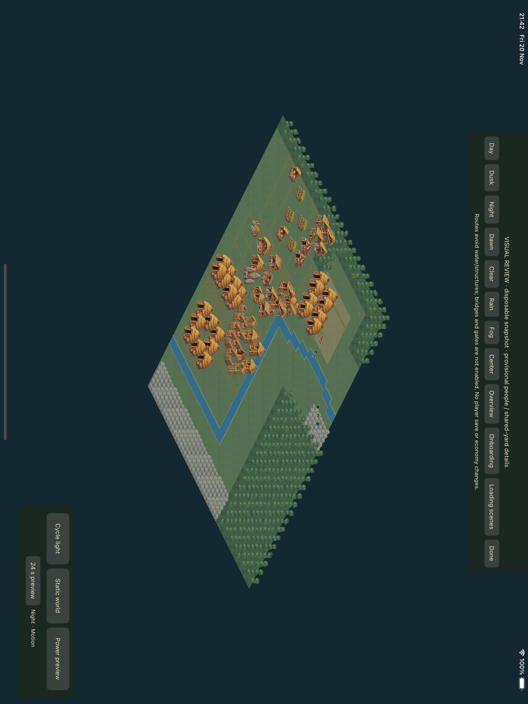
atmosphere night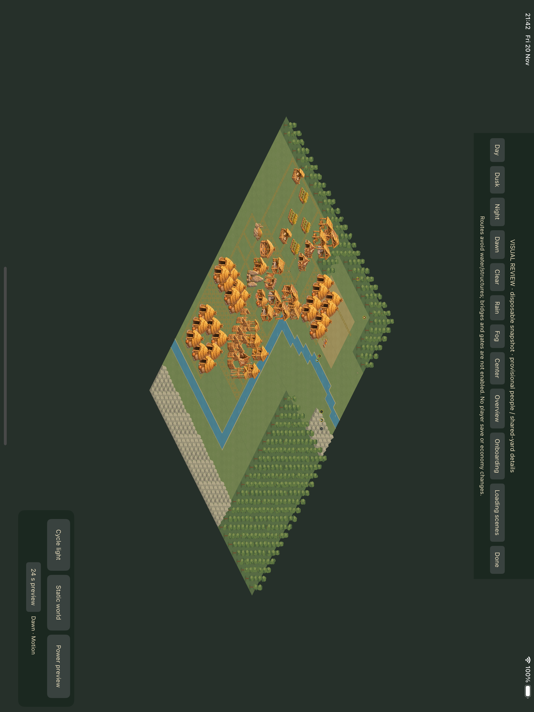
atmosphere dawnatmosphere rain staticatmosphere fog staticCharacter and wildlife concepts — unregistered frames, no runtime export
 villagers-review-v1
villagers-review-v1 wildlife-review-v1
wildlife-review-v1 villagers-review-v2
villagers-review-v2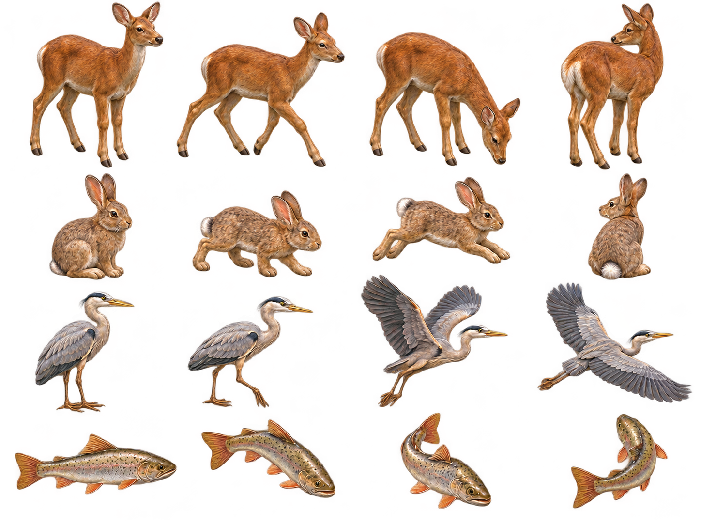
wildlife-review-v2